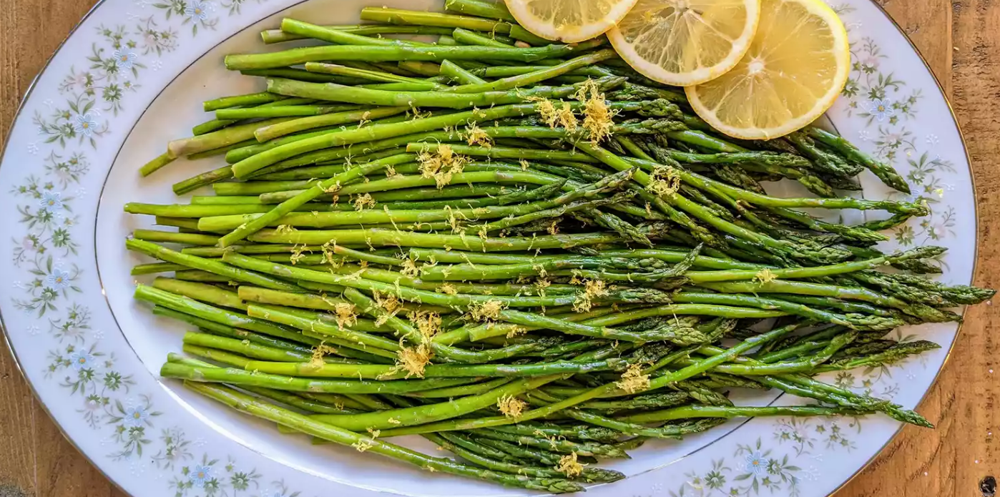

Baked Asparagus

Description
Delightfully prepared oven roasted asparagus seasoned with garlic, lemon juice, and parmesan cheese. The perfect side dish to compliment chicken, fish, or lamb.
Ingredients
- One bunch of asparagus
- 3 tablespoons olive oil
- 1.5 tablespoons grated parmesan cheese
- 1 clove minced garlic
- 1 teaspoon salt
- 0.5 teaspoon ground black pepper
- 1 tablespoon lemon juice
Directions
- Rinse the asparagus in cold water to clean the produce.
- Next, trim the asparagus. Cut off, and throwaway, the bottom section where the stalk turns from white to green.
- Preheat oven to 425 degrees F (220 degrees C).
- Place the asparagus into a mixing bowl and coat with olive oil. Toss to coat all stalks evenly.
- Sprinkle with the parmesan cheese, garlic, salt and pepper. Toss again to evenly distribute the flavorings.
- Arrange the asparagus in a single layer on a baking dish.
- Bake for 12-15 minutes or until tender. Thickness will impact cooking time.
- After removing from the oven, sprinkle with lemon jucie and serve warm.
Return to homepage